Last Updated: 2020-07-15
Salesforce Lightning Connect lets you seamlessly access data from external sources, side-by-side with your Salesforce data. You can pull data from legacy systems such as SAP or Microsoft in real time, without making a copy of the data in Salesforce. And it's all easily configured by a simple yet powerful point and click interface.
When you couple this capability with MuleSoft, you can quickly change and modify the underlying data without any significant impact.
In this codelab, you're going to take a MuleSoft OData API and integrate it with Salesforce Lightning Connect. If you have an existing OData API, you can use that. Otherwise, you can use the following OData API endpoint.
https://odata-api-mule4.us-e1.cloudhub.io/api/odata.svcLogin to Salesforce.com and in the top-right, click on the gear icon and select Setup
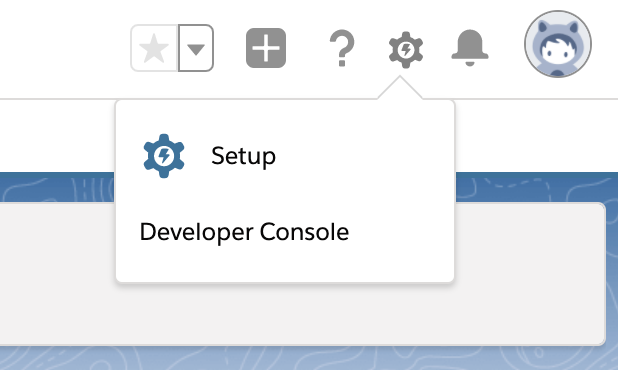
In the Quick Find field, type in External
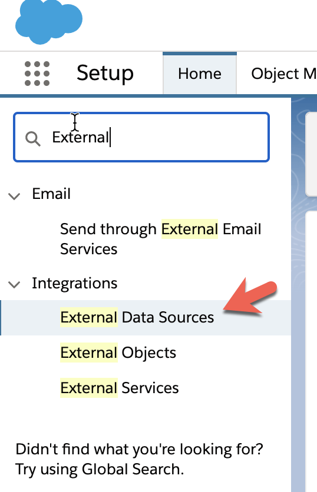
Click on External Data Sources
Click on New External Data Source
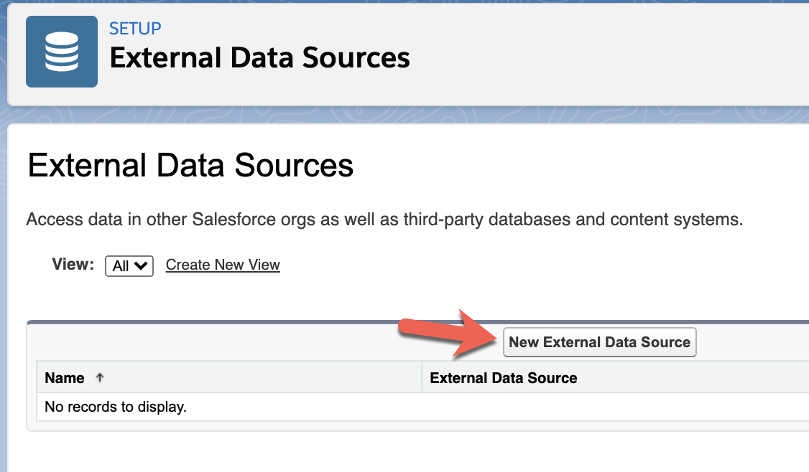
Fill in the following fields and then click on Save
External Data Source |
|
Type |
|
URL |
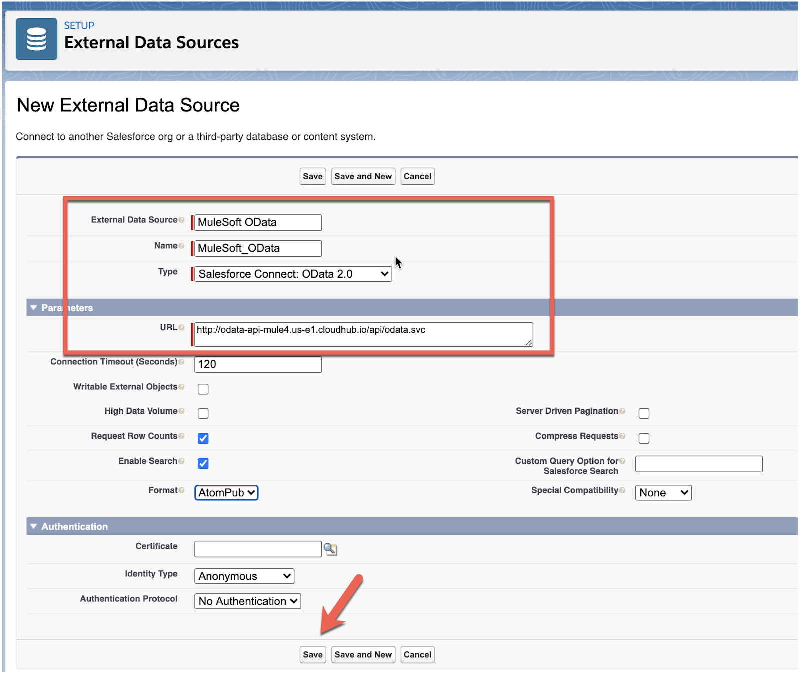
In the next screen, click on Validate and Sync. This will generate a new External Object in Salesforce that points to the OData API.
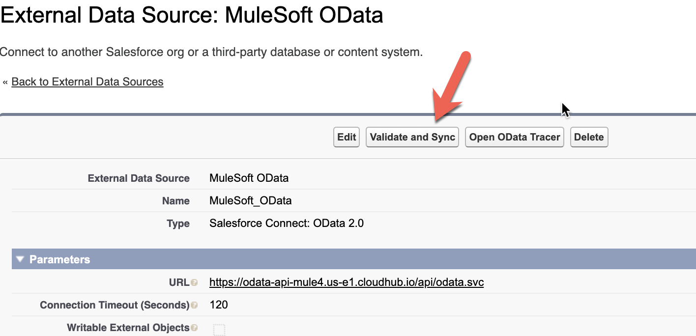
In the Validate External Data Source screen, check the checkboxes next to customers and orders and click on Sync
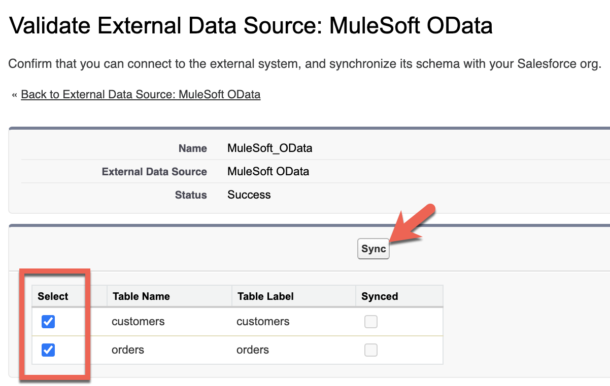
Back in the External Data Sources screen, you can verify the validation and sync was successful if you scroll down to the bottom and see customers and orders in the External Objects section.
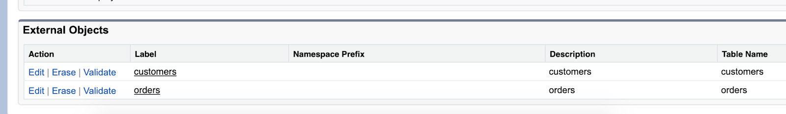
In the Quick Find field in the left-hand navigation bar, search for Tab
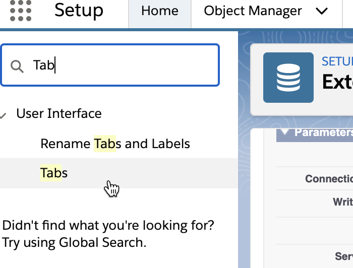
Click on Tabs
In the Custom Tabs screen, click on New
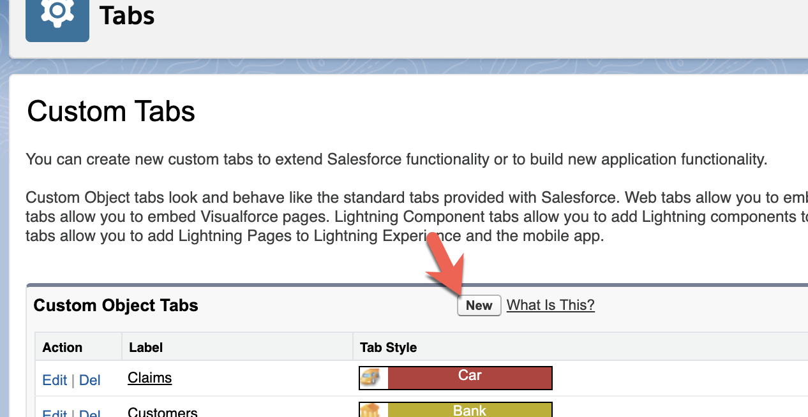
In the New Custom Object Tab, select customers from the Object dropdown menu. Pick any Tab style. Click on Next.
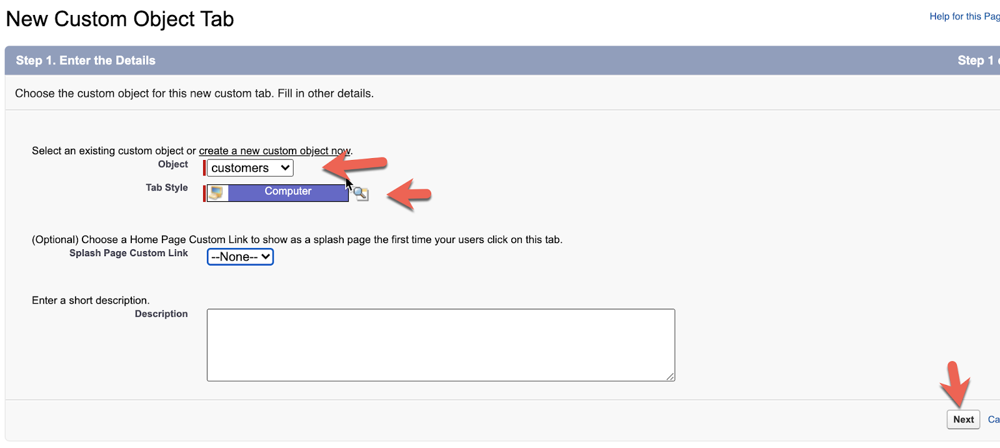
In the Add to Profiles screen click on Next
In the Add to Custom Apps screen, click on Save
Next we want to configure the view of the new tab we created for the External Object. In the App Launcher, click on Search apps and items... and search for customers
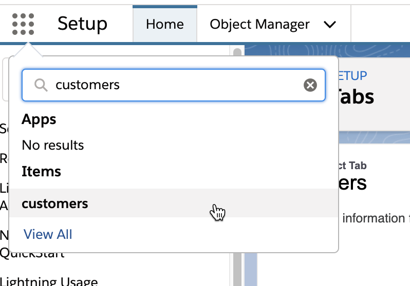
Click on customers to open the new tab.
Change the List Views in the top left to All
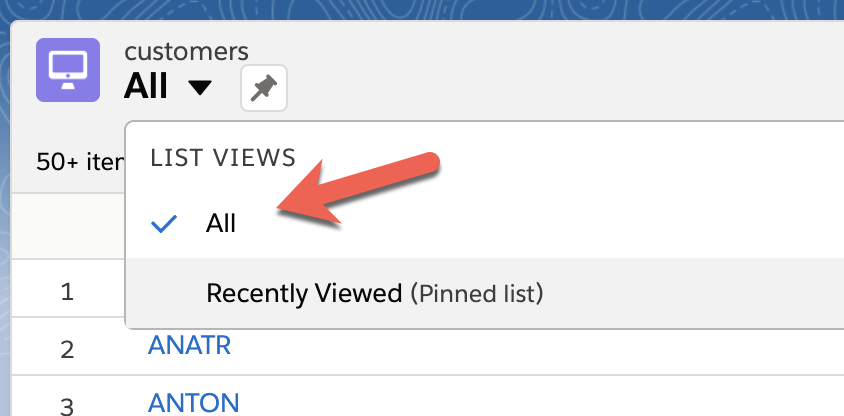
Click the gear icon in the top right corner of the list and select Select Fields to Display
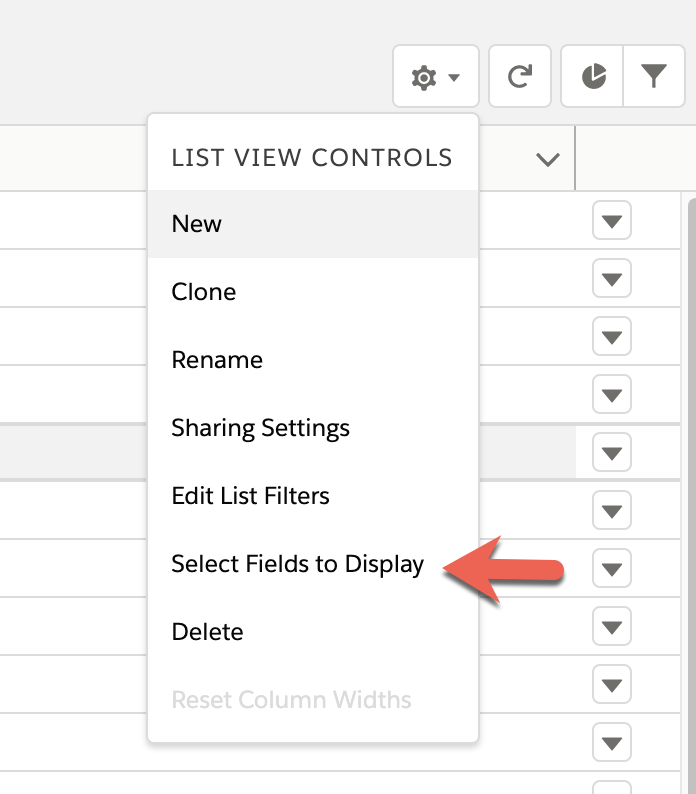
Change the Available Fields and Visible Fields to look like the following and then click on Save
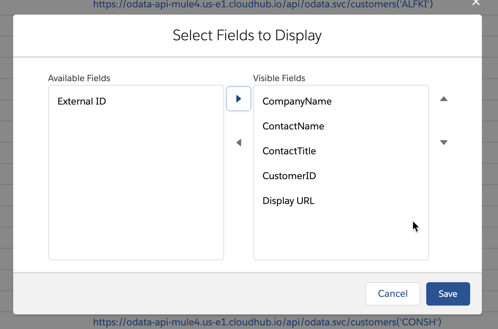
The final screen should look like this.
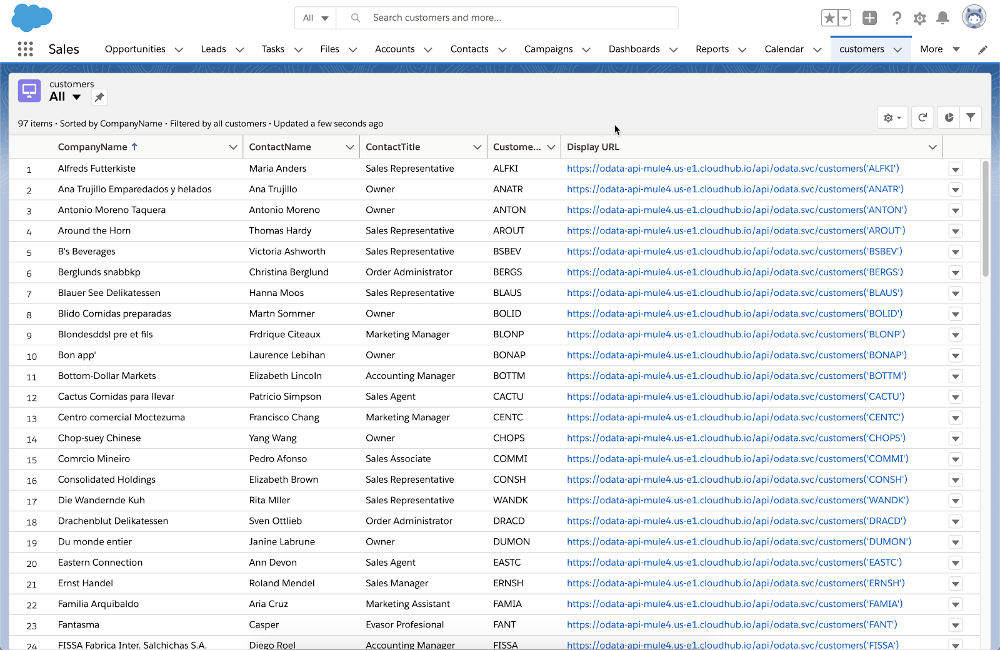
Congratulations, you've successfully integrated a MuleSoft OData API with Salesforce Lightning Connect. Instead of importing data into custom objects in Salesforce, data can reside externally be displayed in a custom tab within Salesforce.
The benefit of this approach is the ability to manage and monitor the use of the data through the Anypoint Platform and API Manager. Developers can re-use this OData API for other projects in addition to leveraging it with Salesforce.
Additionally the API loosely couples the underlying data source. If the database changes, or we need to change it to a new system, MuleSoft provides an easy way to change or compose data from other sources into the existing OData API.
Check out some of these codelabs...